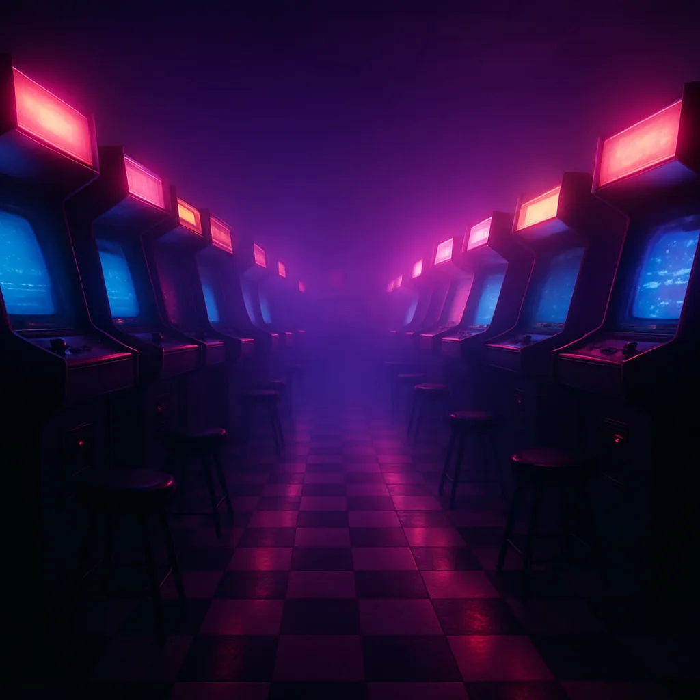
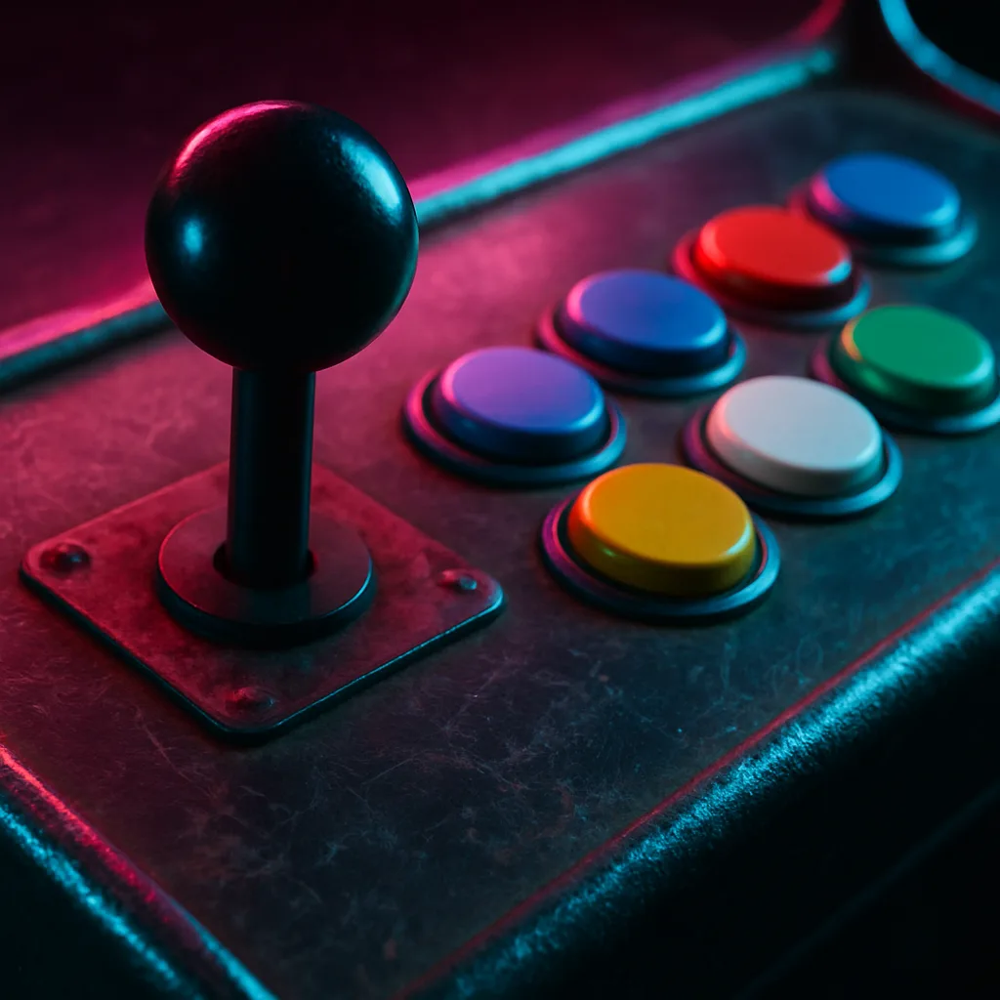
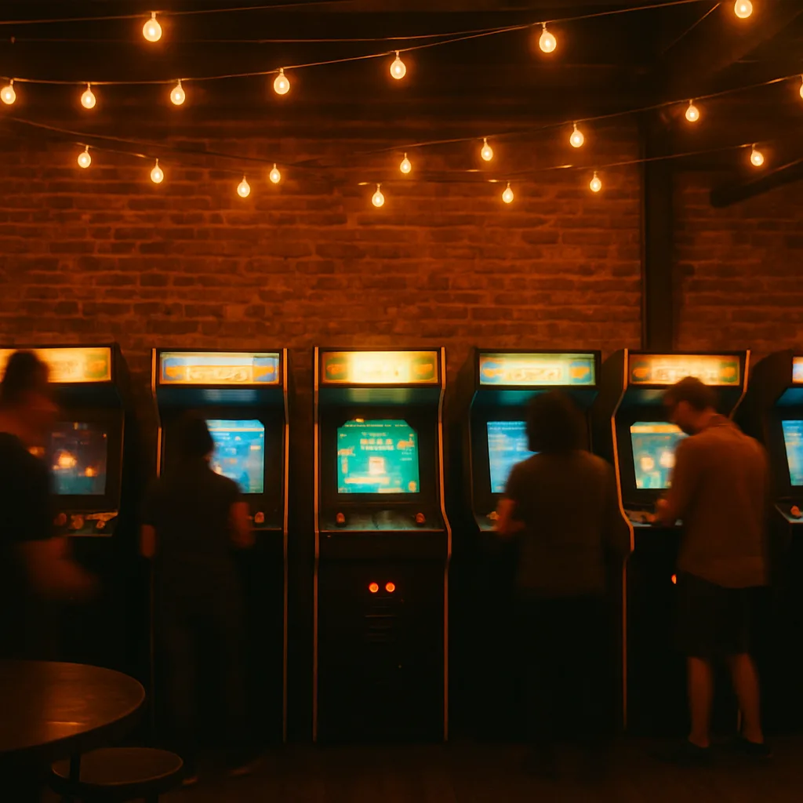

The Golden Age of Arcades
Arcade gaming's first true hit was Atari's Pong in 1972, designed by Allan Alcorn as a training exercise that became a coin-op sensation almost by accident. But it was 1978's Space Invaders, created by Tomohiro Nishikado at Taito, that ignited what's now called the golden age — the game was so popular in Japan it reportedly caused a temporary shortage of 100-yen coins. Namco's Pac-Man followed in 1980, designed by Toru Iwatani specifically to appeal to women and couples at a time when arcades were dominated by war and sports games, and it became the best-selling arcade cabinet of all time. In 1981, Nintendo's Donkey Kong, designed by Shigeru Miyamoto, introduced a carpenter named Jumpman who would later be renamed Mario — the character that built Nintendo into what it is today. The industry crashed hard in 1983 under a flood of low-quality home ports and market oversaturation, but arcades themselves rebounded through the rest of the decade on the strength of new genres home consoles couldn't yet match.
Inside the Cabinet
Most classic arcade cabinets built between the late 1970s and mid-1990s share a common electrical standard called JAMMA (Japan Amusement Machine Manufacturers Association, formalized in 1985), a standardized 56-pin wiring harness that let arcade operators swap one game's circuit board for another inside the exact same cabinet, control panel, and monitor — this is why so many surviving cabinets have been converted between multiple games over their lifetime. Before flat panels, nearly every cabinet used a CRT monitor, often mounted at a fixed 15kHz scan rate that modern displays can't natively read, which is why original-hardware preservation is a genuine technical challenge today. Control panels used heavy-duty leaf or microswitches under joysticks and buttons, built to survive tens of thousands of presses a week in a public venue — a very different design brief than a home controller.
Genres the Arcade Invented
Entire categories of game design were born on arcade floors because they had to work as short, replayable, coin-fed sessions. Namco's Galaga (1981) refined the fixed shooter with enemy formations and a risk/reward capture mechanic. Capcom's Street Fighter II (1991) didn't just popularize the fighting game — its head-to-head cabinets turned arcades into social, competitive spaces again right as home consoles were pulling players away, and it's widely credited with saving the arcade industry for another decade. Midway's Mortal Kombat (1992) pushed fighting games further with digitized actors and graphic finishing moves, becoming one of the most controversial games of its era. Konami's Dance Dance Revolution (1998) turned the player's whole body into the controller and helped birth the rhythm-game genre. Light-gun shooters like Sega's House of the Dead (1996) gave arcades an experience — a mounted plastic gun aimed at a big screen — that simply didn't exist in most living rooms.
Where Arcade Culture Lives Today
Classic arcades never fully disappeared — they specialized. "Barcades" pair a bar with a curated floor of restored cabinets, offering a unique gaming experience. Chains like Dave & Buster's and Round1 built modern business models around redemption games and food service rather than pure skill-based coin-op play. On the preservation side, dedicated venues like popular among arcade enthusiasts and known for its cabinet selection, run largely as living museums you can actually put quarters into. Software preservation has run in parallel through MAME (Multiple Arcade Machine Emulator), an open-source project that's been documenting and emulating arcade hardware since 1997 — often the only reason many rare cabinets' original code still exists in any playable form at all.
Gallery

